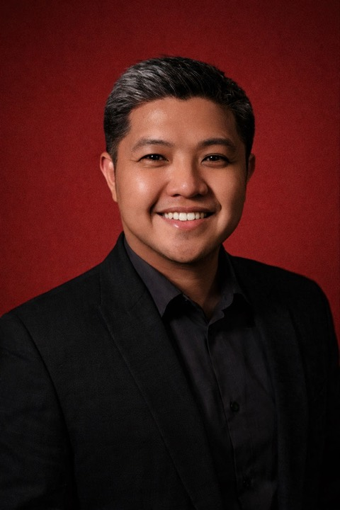

RFP · Nature-Based Data · Quezon City
Technology Lead — Web Systems & Data Platforms. Eleven years of production systems for Philippine organizations: built here, run here, answered for here. Proposed personnel for Creating a Baseline for Nature-based Data in Quezon City.

Everything on this page is also inside these files, in the RfP's exact 10-section template. This page is the annex; the documents are the submission.
All ten sections completed: position, firm, education, associations, training, employment record, and illustrative assignments.
The University of the Philippines Diliman campus is in Quezon City — the same city this baseline will map. A degree in Visual Communication, earned on that campus. Dito ako natutong tumingin. This is where I learned to look.
University of the Philippines Diliman, Philippines
University of the Philippines Diliman, Philippines
Graduated with honors · Philippines
Nineteen years of strata: film, design, apps, teaching — pressing into one discipline: systems that outlive their builder. Iba-iba ang anyo. Iisa ang aral.
Custom web systems, back-office platforms, and payment & compliance systems for Philippine businesses. Eleven years, one firm, a lean team by design — systems in production across salons, law, accounting, publishing, and events.
Taught web design and development in the Fashion Marketing & Management Department.
Group-buying platform, later acquired by Streetdeal.ph (2015).
App development — Sitezapp.com and Yunnoh.com.
Graphics and web solutions — print, video, and web design & development.
Produced and directed commercials, music videos, and shorts. Berlinale Talents 2007; Best Short awards, 2006 and 2007.
Six assignments that best illustrate capability for the tasks assigned — including the demonstration platform built for this very proposal.
Built for the consortium's submission — the methodology, demonstrated before award.
Five corporate entities on one shared data model.
The firm's own back office: the systems sold are the systems used, daily.
Five-entity accounting practice, built toward BIR EIS digital invoicing.
Several legal-advocacy titles on one PostgreSQL instance.
Alumni and chapter systems with payments, directories, and admin.
Donor evaluations score the prescribed form, not the web page — and that is right. Tama naman: the template protects the evaluator. So the form comes first, completed and signed, in the tender's own structure. This page is for the reader who wants to check what the form claims against something that runs.
Proposed Position: Technology Lead — Web Systems & Data Platforms. Firm: Post 205, Inc.
"I, the undersigned, confirm my availability for the entire duration of the contract required for Creating a Baseline for Nature-based Data in Quezon City."